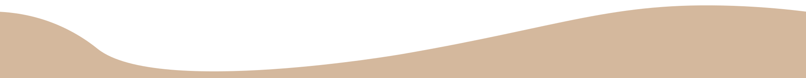

Visie
[Visio]
Onze visie is dat mensen complexe conversaties kunnen hebben over planten. Wij willen dat mensen meer bossen bezoeken, meer voor planten zorgen, meer over planten praten en planten al hun goede aandacht geven.